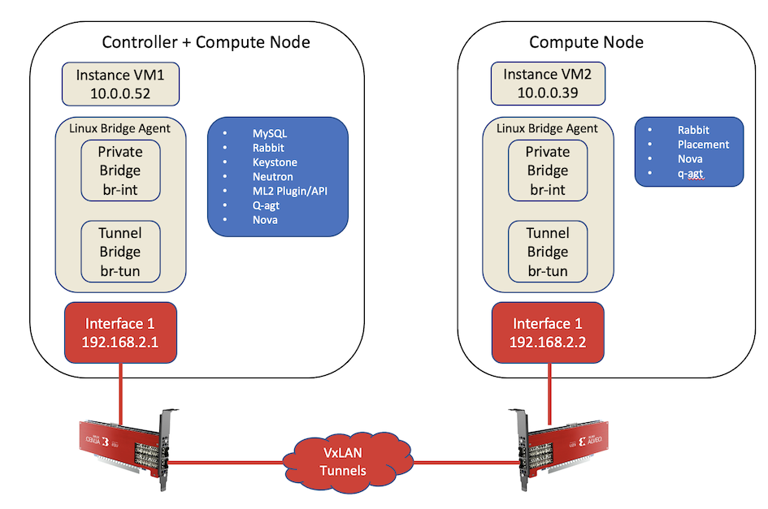
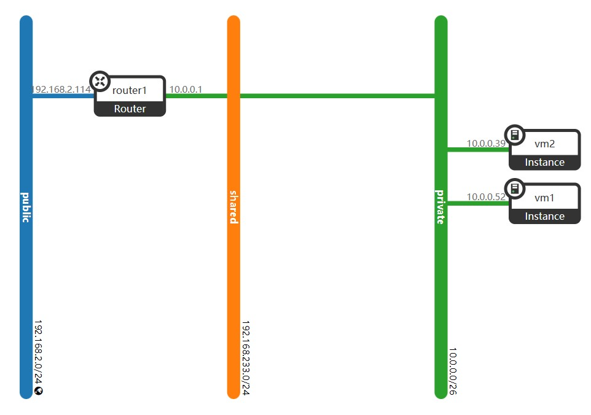
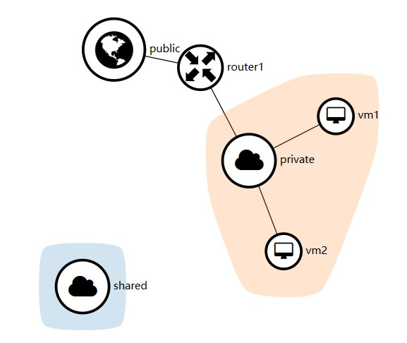

APPENDIX C OpenStack Installation¶
OpenStack supports Open vSwitch hardware offloading. OpenStack Networking can integrate U25N’s Open vSwitch hardware offloading feature to accelerate network processing.
This section describes the steps of setup OpenStack with U25N Open vSwitch hardware offloading support.
1. Hardware Requirements and U25N Installation¶
In this section, two servers with U25N installed are required. One server node acts as conntroller + compute node. Another server node acts as a compute node.

Please refer to U25N Installation Guide for U25N and server configuration.
2. Software Requirements¶
2.1 OpenStack Releases¶
OpenStack has multiple releases from Austin to Zed. In this document, version Zed is used as an example and tested.
2.2 OS versions¶
Ubuntu 22.04 is used as an example and tested in this installation guide.
Below Linux kernel versions are tested.
5.15.0-52-generic
5.15.0-46-generic
2.3 OpenStack Deployment Tool¶
Due to the complexity of OpenStack installation, OpenStack deployment tools document lists some deployment tools. Some OS distributions also have their own deployment tools. For example, Ubuntu has Microstack.
In this section, DevStack is used for the OpenStack deployment. All the configurations for using U25N in OpenStack environment are through standard Nova, Neutron config files. After installation complete, the same configuration files, e.g. /etc/neutron/neutron.conf, /etc/neutron/plugins/ml2/ml2_conf.ini, /etc/nova/nova.conf, /etc/nova/nova-cpu.conf, etc will be used for the following configurations.
3. OpenStack Installation¶
3.1 Grub Configuration¶
Note: Grub configuration should be done on both Controller + Compute node and Compute node
To enable the U25N VF passthrough into the VM instance, it is required to enable IOMMU.
Open /etc/default/grub in the editor
Modify the line of GRUB_CMDLINE_LINUX_DEFAULT to enable IOMMU
# For Intel platform: GRUB_CMDLINE_LINUX_DEFAULT="iommu=pt intel_iommu=on pci=realloc” # For AMD platform: GRUB_CMDLINE_LINUX_DEFAULT="iommu=pt amd_iommu=on pci=realloc”
Update Grub
$ sudo update-grub2
3.2 Add Stack User (optional)¶
Note: Adding stack user should be done on both Controller + Compute node and Compute node
Below setup uses non-root user stack with sudo enabled. The password is set to “nomoresecret” as shown in the following DevStack configuration file.
Note: Please refer to DevStack Documentation for more details.
$ sudo useradd -s /bin/bash -d /opt/stack -m stack
$ sudo chmod +x /opt/stack
$ echo "stack ALL=(ALL) NOPASSWD: ALL" | sudo tee /etc/sudoers.d/stack
$ sudo -u stack -i
$ passwd
Enter new UNIX password: nomoresecret
Retype new UNIX password: nomoresecret
passwd: password updated successfully
3.3 Download DevStack¶
Note: DevStack should be downloaded and installed on both Controller + Compute node and Compute node
Download DevStack release zed from Git repository.
git clone https://opendev.org/openstack/devstack -b stable/zed
3.4 Update DevStack Configuration¶
Note: DevStack configuration should be modified on both Controller + Compute node and Compute node
Copy devstack/sample/local.conf to devstack/ and then add below lines
For server 1 (Controller + Compute Node),
Modify below lines in the local.conf
DATABASE_PASSWORD=$ADMIN_PASSWORD RABBIT_PASSWORD=$ADMIN_PASSWORD
Add below lines in the local.conf
disable_service n-net enable_service q-svc enable_service q-agt enable_service q-dhcp enable_service q-meta enable_service neutron HOST_IP=<server 1's IP> # The IP you ssh to this node PUBLIC_INTERFACE=u25eth0 PUBLIC_NETWORK_GATEWAY=192.168.2.1 # The network u25N attached FLOATING_RANGE=192.168.2.0/24 Q_FLOATING_ALLOCATION_POOL=start=192.168.2.2,end=192.168.2.254 Q_USE_PROVIDERNET_FOR_PUBLIC=True PUBLIC_PHYSICAL_NETWORK=public OVS_BRIDGE_MAPPINGS=public:br-ex OVS_ENABLE_TUNNELING=True Q_PLUGIN=ml2 Q_AGENT=openvswitch Q_L3_ROUTER_PER_TENANT=True Q_ML2_TENANT_NETWORK_TYPE=vxlan Q_ML2_PLUGIN_TYPE_DRIVERS=flat,vxlan Q_ML2_PLUGIN_VXLAN_TYPE_OPTIONS=(vni_ranges=1001:2000) Q_ML2_PLUGIN_MECHANISM_DRIVERS=openvswitch,l2population IP_VERSION=4
For server 2 (Compute Node),
Modify below lines in the local.conf
DATABASE_PASSWORD=$ADMIN_PASSWORD RABBIT_PASSWORD=$ADMIN_PASSWORD
Add below lines in the local.conf
RABBIT_PASSWORD=$ADMIN_PASSWORD HOST_IP=<server 2's IP> # The IP you ssh to this node SERVICE_HOST=<server 1's IP> MYSQL_HOST=$SERVICE_HOST RABBIT_HOST=$SERVICE_HOST GLANCE_HOSTPORT=$SERVICE_HOST:9292 KEYSTONE_AUTH_HOST=$SERVICE_HOST KEYSTONE_SERVICE_HOST=$SERVICE_HOST PHYSICAL_NETWORK=default OVS_PHYSICAL_BRIDGE=br-ex PUBLIC_INTERFACE=u25eth0 Q_USE_PROVIDER_NETWORKING=True PUBLIC_NETWORK_GATEWAY=192.168.2.2 Q_AGENT=openvswitch NEUTRON_AGENT=$Q_AGENT Q_ML2_PLUGIN_MECHANISM_DRIVERS=openvswitch,l2population Q_ML2_TENANT_NETWORK_TYPE=vxlan Q_ML2_PLUGIN_TYPE_DRIVERS=flat,vxlan Q_ML2_PLUGIN_VXLAN_TYPE_OPTIONS=(vni_ranges=1001:2000) ENABLED_SERVICES=n-cpu,rabbit,q-agt,placement-client,n-novnc
Copy devstack/sample/local.sh to devstack/ and comment out below lines
# openstack security group rule create $default --protocol tcp --dst-port 22 # openstack security group rule create $default --protocol icmp
Comment below lines in devstack/lib/neturon-legacy
# ARP_CMD="sudo arping -A -c 3 -w 5 -I $to_intf $IP "
Assign tunnel Endpoint IP to U25N PF interface
Note: Here using U25N’s PF0 as a public interface.
For server 1 (Controller + Compute Node), the TUNNEL_LOCAL_IP is 192.168.2.1 as configured in above local.conf.
For server 2 (Compute Node), the TUNNEL_LOCAL_IP is 192.168.2.2 as configured in above local.conf.
$ ip addr add ${TUNNEL_LOCAL_IP}/24 dev u25eth0 $ ip link set dev u25eth0 up
Then, run stack.sh to install DevStack.
./stack.sh
3.5 U25N Open vSwitch Hardware Offload¶
Note: U25N offload should be configured on both Controller + Compute node and Compute node
Before configuring OpenStack Nova and Neutron configuration files, Virtual Functions of U25N need to be created.
Download OVS bit file on U25N Please refer to U25N Installation Guide for how to install the U25N driver, flash deployment image, load OVS partial Bitstream.
Program the OVS bitstream.
# Set U25N in legacy mode devlink dev eswitch set pci/${PCIE_BUS} mode legacy # Make sure the network ports are up ip link set dev u25eth0 up ip link set dev u25eth1 up # Program the deployment shell U25N_Release/utils/u25n_update upgrade U25N_Release/bits/ovs.bit u25eth0 sleep 5 # Reset hardware to boot from updated deployment shell U25N_Release/utils/u25n_update reset u25eth0 # Get deployment shell version U25N_Release/utils/u25n_update get-version u25eth0
Stop all service of OpenStack
Note: This step is required only afer power cycle or reboot.
$ systemctl stop devstack@*
Stop Network Manager
$ systemctl stop NetworkManager
Enable U25N’s Virtual Function, for this setup, NUM_VF is 1.
# Enable 1 VFs on PF 1, they could be used for VM-to-port or VM-to-VM use cases. echo ${NUM_VF} > /sys/class/net/u25eth0/device/sriov_numvfs # Make sure the network ports are up ip link set dev u25eth0 up ip link set dev u25eth1 up # Set both ports in switchdev for OVS sleep 5 devlink dev eswitch set pci/0000:${PCIE_BUS}:00.0 mode switchdev sleep 5 devlink dev eswitch set pci/0000:${PCIE_BUS}:00.1 mode switchdev sleep 1
Configure Open vSwitch hardware offload
# Export paths export PATH=$PATH:/usr/local/share/openvswitch/scripts export PATH=$PATH:/usr/local/bin # Enable VFs ip link set dev ${VF_0} up # Enable VF Representors ip link set dev ${VF_RP_0} up # Enable hardware offload ovs-vsctl set Open_vSwitch . other_config:hw-offload=true ovs-vsctl set Open_vSwitch . other_config:tc-policy=none
Modify local IP in /etc/neutron/plugin/ml2/ml2_conf.ini on each nodes
# Server 1 (Controller + Compute Node) local_ip = 192.168.2.1 # Server 2 (Compute Node) local_ip = 192.168.2.2
Update /etc/nova/nova.conf on Controller node
[filter_scheduler] enabled_filters = PciPassthroughFilter available_filters = nova.scheduler.filters.all_filters
Update /etc/nova/nova.conf on Compute nodes.
Note: If using single server for both Controller and Compute nodes, this config file is /etc/nova/nova-cpu.conf.
Note: Below af:00 is the Buss:Device of the U25N.
[pci] passthrough_whitelist = {"address":":af:00.", "physical_network":null}Restart Open vSwitch service
$ systemctl restart openvswitch-switch.service
Start all OpenStack services
$ systemctl start devstack@* --all $ systemctl status devstack@* # Check the status of servicesDump the OVS bridge information on both nodes and remove unused interface in br-ex
$ ovs-vsctl show 2f120f0a-fa48-4779-8e75-4915cf4044cc Manager "ptcp:6640:127.0.0.1" is_connected: true Bridge br-ex Controller "tcp:127.0.0.1:6633" is_connected: true fail_mode: secure datapath_type: system Port phy-br-ex Interface phy-br-ex type: patch options: {peer=int-br-ex} Port br-ex Interface br-ex type: internal Bridge br-int Controller "tcp:127.0.0.1:6633" is_connected: true fail_mode: secure datapath_type: system Port int-br-ex Interface int-br-ex type: patch options: {peer=phy-br-ex} Port br-int Interface br-int type: internal Port u25eth0_1 tag: 2 Interface u25eth0_1 Port patch-tun Interface patch-tun type: patch options: {peer=patch-int} Bridge br-tun Controller "tcp:127.0.0.1:6633" is_connected: true fail_mode: secure datapath_type: system Port br-tun Interface br-tun type: internal Port vxlan-c0a80201 Interface vxlan-c0a80201 type: vxlan options: {df_default="true", in_key=flow, local_ip="192.168.2.2", out_key=flow, remote_ip="192.168.2.1"} Port patch-int Interface patch-int type: patch options: {peer=patch-tun} ovs_version: "2.17.3"
If u25eth is attached in Bridge br-ex, please remove it by below command.
ovs-vsctl del-port br-ex u25eth0
3.6 Launch VM instance¶
Note: Launching VM instannce requires to use openstack command line tool and only need to run it from the Controller + Compute node.
Source openrc to use OpenStack command line tool on Controller node
Source openrc in the shell, and then use the openstack command line tool to manage your OpenStack.
```bash $ cd devstack/ $ source openrc admin ```
Prepare Cloud VM image
In this instruction, Ubuntu Cloud image is used as the VM image.
```bash # Install necessary packeges for VM support. Most of them should already been installed during DevStack installation $ apt install -y libvirt-clients qemu-kvm libvirt-daemon-system bridge-utils virtinst cloud-image-utils libguestfs-tools # Validate the host for virtualzation support $ virt-host-validate $ systemctl status libvirtd # Create VM image and set root password as "root" $ virt-builder ubuntu-20.04 --install "linux-modules-extra-`uname -r`" --format qcow2 --output ubuntu.qcow2 --root-password password:root
Add Cloud VM image to OpenStack
# Create OpenStack image $ openstack image create --disk-format qcow2 --file ubuntu.qcow2 ubuntuCreate two direct ports for U25N’s VF on the private network
$ openstack port create --network private --vnic-type=direct --binding-profile '{"capabilities": ["switchdev"]}' direct_port1 $ openstack port create --network private --vnic-type=direct --binding-profile '{"capabilities": ["switchdev"]}' direct_port2
Create two VM instances with direct port attached
To make one VM instance per each node, host server is specified in the OpenStack server creation command.
Get host name by list available Compute host
$ openstack compute service list +--------------------------------------+----------------+---------+----------+---------+-------+----------------------------+ | ID | Binary | Host | Zone | Status | State | Updated At | +--------------------------------------+----------------+---------+----------+---------+-------+----------------------------+ | 53b216ed-3b68-4187-bc43-5d8156a666e8 | nova-scheduler | server1 | internal | enabled | up | 2023-01-12T01:52:31.000000 | | 3e97f027-3320-4a73-aed4-3c08aa06b5f1 | nova-conductor | server1 | internal | enabled | up | 2023-01-12T01:52:33.000000 | | 8afa5295-03f0-4de4-9f3f-0c63db719bc1 | nova-conductor | server1 | internal | enabled | up | 2023-01-12T01:52:33.000000 | | 21b79147-ef60-4d6a-bd4c-0cc26e1b6420 | nova-compute | server1 | nova | enabled | up | 2023-01-12T01:52:34.000000 | | 95502539-446e-4d7c-bda5-4c9796ef66d0 | nova-compute | server2 | nova | enabled | up | 2023-01-12T01:52:27.000000 | +--------------------------------------+----------------+---------+----------+---------+-------+----------------------------+
Besides the compute server list, check the hypervisor to make sure both server’s hypervisor are detected by OpenStack
$ openstack hypervisor list +----+---------------------------+-----------------+---------------+-------+ | ID | Hypervisor Hostname | Hypervisor Type | Host IP | State | +----+---------------------------+-----------------+---------------+-------+ | 1 | server1 | QEMU | <server 1 IP> | up | | 2 | server2 | QEMU | <server 2 IP> | up | +----+---------------------------+-----------------+---------------+-------+
If host is not mapped to any cell, use below command to rediscover the host.
Create VM instances on the certain host
$ openstack server create --flavor <flavor name> --image <image ID> --availability-zone nova:<hostname> --nic port-id=<direct_port> <instance name>For example:
$ openstack server create --flavor 2 --image ubuntu --availability-zone nova:server1 --nic port-id=direct_port1 vm1 $ openstack server create --flavor 2 --image ubuntu --availability-zone nova:server1 --nic port-id=direct_port2 vm2
Connect to instance1 and send ICMP Echo Request packets to instance2
vm1# ping <vm2 IP>
4 OpenStack Configuration Sample¶
Login to https://server1 to check the horizon GUI and dump the network topology
Default username:password is admin:nomoresecret
 
Below is the configuration sample dumpped by OpenStack command line tool
(openstack) hypervisor list +----+---------------------------+-----------------+---------------+-------+ | ID | Hypervisor Hostname | Hypervisor Type | Host IP | State | +----+---------------------------+-----------------+---------------+-------+ | 1 | server1 | QEMU | <server 1 IP> | up | | 2 | server2 | QEMU | <server 2 IP> | up | +----+---------------------------+-----------------+---------------+-------+ (openstack) compute service list +--------------------------------------+----------------+---------+----------+---------+-------+----------------------------+ | ID | Binary | Host | Zone | Status | State | Updated At | +--------------------------------------+----------------+---------+----------+---------+-------+----------------------------+ | 53b216ed-3b68-4187-bc43-5d8156a666e8 | nova-scheduler | server1 | internal | enabled | up | 2023-01-12T01:52:31.000000 | | 3e97f027-3320-4a73-aed4-3c08aa06b5f1 | nova-conductor | server1 | internal | enabled | up | 2023-01-12T01:52:33.000000 | | 8afa5295-03f0-4de4-9f3f-0c63db719bc1 | nova-conductor | server1 | internal | enabled | up | 2023-01-12T01:52:33.000000 | | 21b79147-ef60-4d6a-bd4c-0cc26e1b6420 | nova-compute | server1 | nova | enabled | up | 2023-01-12T01:52:34.000000 | | 95502539-446e-4d7c-bda5-4c9796ef66d0 | nova-compute | server2 | nova | enabled | up | 2023-01-12T01:52:27.000000 | +--------------------------------------+----------------+---------+----------+---------+-------+----------------------------+ (openstack) server list +--------------------------------------+------+--------+-------------------+--------+-----------+ | ID | Name | Status | Networks | Image | Flavor | +--------------------------------------+------+--------+-------------------+--------+-----------+ | 6b3356f3-5e23-450f-9a6e-14147990b0f2 | vm2 | ACTIVE | private=10.0.0.39 | ubuntu | m1.large | | 24b8231e-0ae8-4581-a350-76231ba30ea3 | vm1 | ACTIVE | private=10.0.0.52 | ubuntu | m1.xlarge | +--------------------------------------+------+--------+-------------------+--------+-----------+ (openstack) server show vm1 +-------------------------------------+----------------------------------------------------------+ | Field | Value | +-------------------------------------+----------------------------------------------------------+ | OS-DCF:diskConfig | MANUAL | | OS-EXT-AZ:availability_zone | nova | | OS-EXT-SRV-ATTR:host | server1 | | OS-EXT-SRV-ATTR:hypervisor_hostname | server1 | | OS-EXT-SRV-ATTR:instance_name | instance-00000008 | | OS-EXT-STS:power_state | Running | | OS-EXT-STS:task_state | None | | OS-EXT-STS:vm_state | active | | OS-SRV-USG:launched_at | 2023-01-11T09:32:25.000000 | | OS-SRV-USG:terminated_at | None | | accessIPv4 | | | accessIPv6 | | | addresses | private=10.0.0.52 | | config_drive | | | created | 2023-01-11T09:31:53Z | | flavor | m1.xlarge (5) | | hostId | 87f48315a984ef8f0aad61eaec4435b5179468af66be9e984f820b68 | | id | 24b8231e-0ae8-4581-a350-76231ba30ea3 | | image | ubuntu (5b4f747d-f778-430f-93fa-a4fff3f33223) | | key_name | None | | name | vm1 | | progress | 0 | | project_id | b9d3608c81a74b4a953146a302142c26 | | properties | | | security_groups | name='default' | | status | ACTIVE | | updated | 2023-01-11T09:32:26Z | | user_id | d92a44031cbf4ff7840bd16c04b0c569 | | volumes_attached | | +-------------------------------------+----------------------------------------------------------+ (openstack) server show vm2 +-------------------------------------+----------------------------------------------------------+ | Field | Value | +-------------------------------------+----------------------------------------------------------+ | OS-DCF:diskConfig | MANUAL | | OS-EXT-AZ:availability_zone | nova | | OS-EXT-SRV-ATTR:host | server2 | | OS-EXT-SRV-ATTR:hypervisor_hostname | server2 | | OS-EXT-SRV-ATTR:instance_name | instance-0000000b | | OS-EXT-STS:power_state | Running | | OS-EXT-STS:task_state | None | | OS-EXT-STS:vm_state | active | | OS-SRV-USG:launched_at | 2023-01-11T10:27:38.000000 | | OS-SRV-USG:terminated_at | None | | accessIPv4 | | | accessIPv6 | | | addresses | private=10.0.0.39 | | config_drive | | | created | 2023-01-11T10:27:30Z | | flavor | m1.large (4) | | hostId | 5704a22af1b38b8ed0235f34e26cb050cd5fc0c63ab2964db8cb9c92 | | id | 6b3356f3-5e23-450f-9a6e-14147990b0f2 | | image | ubuntu (5b4f747d-f778-430f-93fa-a4fff3f33223) | | key_name | None | | name | vm2 | | progress | 0 | | project_id | b9d3608c81a74b4a953146a302142c26 | | properties | | | security_groups | name='default' | | status | ACTIVE | | updated | 2023-01-11T10:27:39Z | | user_id | d92a44031cbf4ff7840bd16c04b0c569 | | volumes_attached | | +-------------------------------------+----------------------------------------------------------+ (openstack) network list +--------------------------------------+---------+--------------------------------------+ | ID | Name | Subnets | +--------------------------------------+---------+--------------------------------------+ | 4b8396ce-f932-4f64-95d1-3b1274b606e6 | public | 6a9ece87-cb33-4e92-b1cc-8335dbdf54c6 | | ead66cda-b35a-4af0-bf90-5c3c1fca808f | shared | 89bf2fcb-dc6b-4b13-811a-ee2a0cb145c5 | | eb96370b-4063-4a4a-9151-39c941fffb83 | private | c9b0c2c8-5dd3-440f-b1d9-fed99d18849e | +--------------------------------------+---------+--------------------------------------+ (openstack) network show private +---------------------------+--------------------------------------+ | Field | Value | +---------------------------+--------------------------------------+ | admin_state_up | UP | | availability_zone_hints | | | availability_zones | nova | | created_at | 2023-01-11T05:29:39Z | | description | | | dns_domain | None | | id | eb96370b-4063-4a4a-9151-39c941fffb83 | | ipv4_address_scope | None | | ipv6_address_scope | None | | is_default | None | | is_vlan_transparent | None | | mtu | 1450 | | name | private | | port_security_enabled | True | | project_id | b9d3608c81a74b4a953146a302142c26 | | provider:network_type | vxlan | | provider:physical_network | None | | provider:segmentation_id | 1358 | | qos_policy_id | None | | revision_number | 2 | | router:external | Internal | | segments | None | | shared | False | | status | ACTIVE | | subnets | c9b0c2c8-5dd3-440f-b1d9-fed99d18849e | | tags | | | updated_at | 2023-01-11T05:29:40Z | +---------------------------+--------------------------------------+ (openstack) network show public +---------------------------+--------------------------------------+ | Field | Value | +---------------------------+--------------------------------------+ | admin_state_up | UP | | availability_zone_hints | | | availability_zones | nova | | created_at | 2023-01-11T05:29:49Z | | description | | | dns_domain | None | | id | 4b8396ce-f932-4f64-95d1-3b1274b606e6 | | ipv4_address_scope | None | | ipv6_address_scope | None | | is_default | True | | is_vlan_transparent | None | | mtu | 1500 | | name | public | | port_security_enabled | True | | project_id | c4dd2d393580489d9821e51f756814a4 | | provider:network_type | flat | | provider:physical_network | public | | provider:segmentation_id | None | | qos_policy_id | None | | revision_number | 2 | | router:external | External | | segments | None | | shared | False | | status | ACTIVE | | subnets | 6a9ece87-cb33-4e92-b1cc-8335dbdf54c6 | | tags | | | updated_at | 2023-01-11T05:29:53Z | +---------------------------+--------------------------------------+ (openstack) port list +--------------------------------------+--------------+-------------------+------------------------------------------------------------------------------+--------+ | ID | Name | MAC Address | Fixed IP Addresses | Status | +--------------------------------------+--------------+-------------------+------------------------------------------------------------------------------+--------+ | 106930bf-7170-4d35-9a3f-e3c3b6596c4a | | fa:16:3e:86:fb:66 | ip_address='10.0.0.2', subnet_id='c9b0c2c8-5dd3-440f-b1d9-fed99d18849e' | ACTIVE | | 1acb4e56-4d2d-47ee-be9f-8cdcb21444b1 | | fa:16:3e:99:3f:fe | ip_address='192.168.2.114', subnet_id='6a9ece87-cb33-4e92-b1cc-8335dbdf54c6' | DOWN | | 2fd0af9f-92a7-4883-9ab1-322a25a122c8 | direct_port1 | fa:16:3e:64:61:db | ip_address='10.0.0.52', subnet_id='c9b0c2c8-5dd3-440f-b1d9-fed99d18849e' | ACTIVE | | 845e5c57-74a3-409a-b072-fcbdcb2de989 | direct_port2 | fa:16:3e:b6:a6:11 | ip_address='10.0.0.39', subnet_id='c9b0c2c8-5dd3-440f-b1d9-fed99d18849e' | ACTIVE | | b742df40-f426-4761-9acb-804e69f5b14f | | fa:16:3e:f4:e2:f7 | ip_address='10.0.0.1', subnet_id='c9b0c2c8-5dd3-440f-b1d9-fed99d18849e' | DOWN | | d809f1a1-2c3f-4cb7-8883-48049195ebe7 | | fa:16:3e:08:09:ed | ip_address='192.168.233.2', subnet_id='89bf2fcb-dc6b-4b13-811a-ee2a0cb145c5' | ACTIVE | +--------------------------------------+--------------+-------------------+------------------------------------------------------------------------------+--------+ (openstack) port show direct_port1 -f table --fit-width +-------------------------+--------------------------------------------------------------------------------------------------------------------------------+ | Field | Value | +-------------------------+--------------------------------------------------------------------------------------------------------------------------------+ | admin_state_up | UP | | allowed_address_pairs | | | binding_host_id | server1 | | binding_profile | capabilities='['switchdev']', card_serial_number='XFL1Y0JRZMSK', pci_slot='0000:3b:00.3', pci_vendor_info='1924:1b03', | | | pf_mac_address='00:0a:35:0d:b9:d0', physical_network=, vf_num='1' | | binding_vif_details | bound_drivers.0='openvswitch', bridge_name='br-int', connectivity='l2', datapath_type='system', ovs_hybrid_plug='False', | | | port_filter='True' | | binding_vif_type | ovs | | binding_vnic_type | direct | | created_at | 2023-01-11T07:28:24Z | | data_plane_status | None | | description | | | device_id | 24b8231e-0ae8-4581-a350-76231ba30ea3 | | device_owner | compute:nova | | device_profile | None | | dns_assignment | None | | dns_domain | None | | dns_name | None | | extra_dhcp_opts | | | fixed_ips | ip_address='10.0.0.52', subnet_id='c9b0c2c8-5dd3-440f-b1d9-fed99d18849e' | | id | 2fd0af9f-92a7-4883-9ab1-322a25a122c8 | | ip_allocation | None | | mac_address | fa:16:3e:64:61:db | | name | direct_port1 | | network_id | eb96370b-4063-4a4a-9151-39c941fffb83 | | numa_affinity_policy | None | | port_security_enabled | True | | project_id | b9d3608c81a74b4a953146a302142c26 | | propagate_uplink_status | None | | qos_network_policy_id | None | | qos_policy_id | None | | resource_request | None | | revision_number | 21 | | security_group_ids | d8577903-067b-4ea0-911d-ba20dabdafb9 | | status | ACTIVE | | tags | | | trunk_details | None | | updated_at | 2023-01-11T09:32:19Z | +-------------------------+--------------------------------------------------------------------------------------------------------------------------------+ (openstack) port show direct_port2 -f table --fit-width +-------------------------+--------------------------------------------------------------------------------------------------------------------------------+ | Field | Value | +-------------------------+--------------------------------------------------------------------------------------------------------------------------------+ | admin_state_up | UP | | allowed_address_pairs | | | binding_host_id | server2 | | binding_profile | capabilities='['switchdev']', card_serial_number='XFL11BYHGMCY', pci_slot='0000:af:00.3', pci_vendor_info='1924:1b03', | | | pf_mac_address='00:0a:35:0d:b1:60', physical_network=, vf_num='1' | | binding_vif_details | bound_drivers.0='openvswitch', bridge_name='br-int', connectivity='l2', datapath_type='system', ovs_hybrid_plug='False', | | | port_filter='True' | | binding_vif_type | ovs | | binding_vnic_type | direct | | created_at | 2023-01-11T08:07:16Z | | data_plane_status | None | | description | | | device_id | 6b3356f3-5e23-450f-9a6e-14147990b0f2 | | device_owner | compute:nova | | device_profile | None | | dns_assignment | None | | dns_domain | None | | dns_name | None | | extra_dhcp_opts | | | fixed_ips | ip_address='10.0.0.39', subnet_id='c9b0c2c8-5dd3-440f-b1d9-fed99d18849e' | | id | 845e5c57-74a3-409a-b072-fcbdcb2de989 | | ip_allocation | None | | mac_address | fa:16:3e:b6:a6:11 | | name | direct_port2 | | network_id | eb96370b-4063-4a4a-9151-39c941fffb83 | | numa_affinity_policy | None | | port_security_enabled | True | | project_id | b9d3608c81a74b4a953146a302142c26 | | propagate_uplink_status | None | | qos_network_policy_id | None | | qos_policy_id | None | | resource_request | None | | revision_number | 18 | | security_group_ids | d8577903-067b-4ea0-911d-ba20dabdafb9 | | status | ACTIVE | | tags | | | trunk_details | None | | updated_at | 2023-01-11T10:27:34Z | +-------------------------+--------------------------------------------------------------------------------------------------------------------------------+